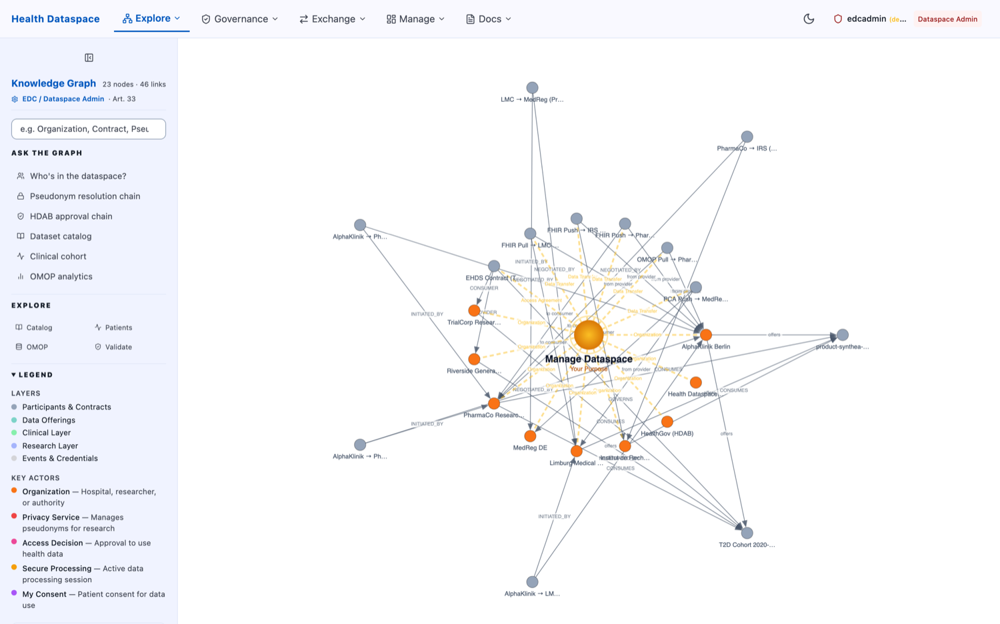
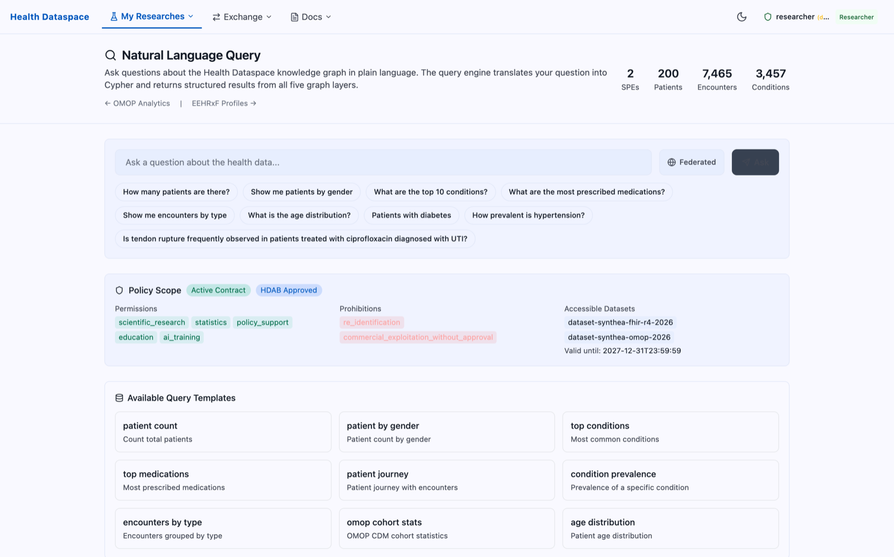

FHIR-Grounded, Governed AI for the European Health Data Space
An open-source reference implementation pairing an HL7 FHIR knowledge graph with governed, retrieval-grounded AI for the safe secondary use of health data.
In one sentence: a FHIR R4 knowledge graph you can query in natural language, where every AI answer is grounded in standardised clinical data and gated by European Health Data Space (EHDS) governance — demonstrated end-to-end on synthetic data only.
1 Innovation & Impact
1.1 Unique features & why they are innovative
FHIR-grounded AI. Clinical data is modelled as an HL7 FHIR R4 knowledge graph (Neo4j). The AI reasons over standardised, terminology-coded facts rather than free text — turning grounding into the primary defence against hallucination, the central risk of LLMs in healthcare.
Natural-language → governed query (Text2Cypher). Clinicians and researchers ask questions in plain English; the platform produces an auditable graph query. No query language skills required, yet every request remains inspectable.
Graph retrieval-augmented generation (GraphRAG). LLM answers are anchored to subgraphs retrieved from the FHIR graph, so responses are backed by structured clinical evidence.
Governance by construction. Every data access traverses an EHDS Health Data Access Body (HDAB) approval chain, machine-readable ODRL policies, and role-based access control before any result is returned. The AI cannot bypass governance — “responsible AI” is structural, not a disclaimer.
Five interoperability layers in one graph. A single query can traverse from a data-sharing contract → a FHIR patient → an OMOP analytic cohort → a SNOMED CT concept. This unification of marketplace, catalogue, clinical, analytics and terminology layers is the platform’s defining novelty (Fig. 1).
Standards-first & portable. Built on the Eclipse Dataspace Components and the Dataspace Protocol; the same AI layer works against any FHIR-conformant source.
Open and reproducible. Apache-2.0, runnable on a laptop in minutes; it also serves as a meta-demonstration of responsible agentic-AI software engineering (AI-assisted development wrapped in deterministic CI/CD gates).

Figure 1. The five interoperability layers in a single knowledge graph (Graph Explorer, dataspace-admin view): participants & contracts, data offerings, the FHIR clinical layer, the OMOP research layer, and events & credentials — with built-in entry points for the HDAB approval chain, pseudonym resolution, and clinical/OMOP cohorts. Public demo, synthetic data.
1.2 Real-world deployment — scope, scale & status
Status (honest): a working open-source reference implementation / public demonstrator (prototype maturity). It is not yet deployed with real patient data inside a healthcare organisation; it runs entirely on synthetic data.
Scope: a complete EHDS secondary-use scenario — a clinical research organisation requests a hospital’s dataset for a drug-repurposing study, with access governed by a Health Data Access Body. It covers participant onboarding, catalogue discovery, contract negotiation (DSP), verifiable-credential issuance (DCP), governed data transfer, and analytics/querying.
Scale: a 19-service dataspace stack; a Synthea-generated synthetic cohort of ≈200 patients with ≈7,500 encounters and ≈3,500 conditions (and tens of thousands of observations; see Fig. 3); five graph layers; multiple participants (hospitals, a CRO, and HDABs).
Environments: local Docker / Kubernetes; a public zero-backend demo (GitHub Pages); and a live cloud reference on Azure Container Apps (ehds.mabu.red), cost-managed via off-hours auto scale-down.
Planned: partner with European public administrations / health authorities to pilot on governed real data; harden to BSI C5 for production; pursue EU recognition (e.g. European Data Spaces Awards).
1.3 Realized & anticipated impact on health / healthcare
Realized today:
A free, reproducible reference that lowers the barrier for health bodies to understand and prototype EHDS-compliant, AI-assisted data sharing.
A concrete, copyable pattern for responsible AI on health data (FHIR grounding + in-path governance + privacy protection).
Verifiable engineering quality: passes the DSP 2025-1 Technology Compatibility Kit, DCP v1.0 and EHDS-domain compliance suites; meets WCAG 2.2 AA accessibility; runs automated OWASP/BSI security tests; ≈1,490 unit tests at ≈94% statement coverage and ≈778 end-to-end checks.
Anticipated with adoption:
Faster, safer secondary use — self-service cohort discovery for researchers without exposing raw identifiable data.
Lower hallucination risk in clinical querying, because answers are grounded in standardised FHIR facts.
Reusable governance building blocks (HDAB approval, immutable audit, k-anonymity) that other implementers can adopt directly.
On measurability: the metrics above evidence breadth, standards-conformance and engineering rigour. Clinical-outcome metrics (e.g. study turnaround time, re-identification risk in practice) require a real-world pilot, which is the explicit next step.
The core is a single Neo4j 5 knowledge graph organised in five layers (Fig. 1). A Next.js 14 portal provides the UI; a TypeScript/Express query proxy bridges the dataspace data plane to the graph. Identity and trust use Keycloak (OIDC), DID:web and W3C Verifiable Credentials.
Layer
Standard / model
Represents
L1 — Dataspace marketplace
DSP 2025-1 · ODRL 2.2
Participants, Data Products, Contracts, HDAB approvals
L2 — Metadata catalogue
HealthDCAT-AP 2.1 (DCAT-AP)
Catalogues, Datasets, Distributions, Data Services
Cost-benefit: the full stack runs for free on a laptop; the cloud reference uses Azure Container Apps with documented off-hours scale-down to keep a 24×5 live demo within a small personal budget — demonstrating deliberate cost engineering.
Scalability: services are containerised and largely stateless (the graph is the principal stateful component); EDC-V isolates tenants; because the AI layer sits on standardised FHIR, onboarding an additional source is incremental rather than bespoke.
Delivery: GitHub Actions CI/CD enforces unit/integration/E2E/accessibility/security/SBOM/compliance gates on every change (process documented openly in the repository’s SDLC guide).
2.2 HL7 standards used — and the value realized
HL7 FHIR R4 (primary). The clinical substrate: synthetic records are generated as FHIR R4 and modelled as graph nodes/relationships; full-patient context follows the FHIR $everything pattern; resources bind to SNOMED CT / LOINC. Value: one interoperable, machine-readable clinical model that the AI can ground on and that is portable across any FHIR source — this standardisation is precisely what makes the AI layer reusable and the hallucination-grounding possible.
HL7 Europe EEHRxF. Profile alignment and gap analysis against EHDS priority categories (the European EHR Exchange Format). Value: aligns the demonstrator with the EU cross-border exchange direction.
Other standards leveraged (non-HL7): OMOP CDM v5.4 (OHDSI) for analytics with a FHIR→OMOP transform; HealthDCAT-AP / DCAT-AP (W3C) for catalogue metadata; DSP 2025-1, DCP v1.0, DPS (Eclipse/IDSA) for sovereign exchange; ODRL 2.2 (W3C) for policy-as-code; DID:web & Verifiable Credentials (W3C) and OIDC for identity; SNOMED CT, ICD-10, LOINC, RxNorm for terminology.
2.3 AI technologies & approaches
Natural Language Processing (Text2Cypher): translates plain-language clinical questions into governed graph queries (a template library with an optional LLM step).
Generative AI / Retrieval-Augmented Generation (GraphRAG): LLM answers are grounded in subgraphs retrieved from the FHIR knowledge graph (using Neo4j graph algorithms and an Azure AI Foundry GraphRAG approach), so output cites structured clinical evidence.
Knowledge-graph reasoning: multi-hop traversal across the five layers connects governance, clinical and analytic facts in a single query.
Privacy-preserving analytics: k-anonymity thresholds are applied to federated query results.
Agentic AI (engineering): the platform itself is built and maintained with an AI agent operating under deterministic CI gates — a governed-AI engineering demonstration.

Figure 3. Natural-language querying (Text2Cypher) over the FHIR knowledge graph. The question is answered within a live policy scope — an active contract, HDAB approval, permitted purposes (e.g. scientific research) and explicit prohibitions (no re-identification, no commercial exploitation) — so the AI operates strictly inside governance. Public demo, synthetic data.
Scope honesty: the AI assists discovery and querying; it does not perform autonomous diagnosis or clinical decision-making. No predictive models are applied to real patients.
2.4 Key learnings
Grounding beats prompting. Anchoring the LLM to a FHIR knowledge graph is the single most effective hallucination control for clinical querying.
Put governance in the data path. Routing every AI query through the HDAB / ODRL / RBAC chain makes responsible AI structural rather than aspirational.
Standards are the scalability story. Because data is FHIR- and terminology-coded, the AI layer is source-agnostic and reusable across organisations.
Disaggregated dataspace components are powerful but operationally heavy; deliberate cost engineering was needed to keep a live demo affordable.
Decision-logged, token-efficient documentation (architecture decision records) materially improves the quality of AI-assisted development.
Synthetic data (Synthea) is sufficient to exercise the entire pipeline safely, end to end.
2.5 Challenges / obstacles that HL7 could help improve
No standard bridge between FHIR and dataspace protocols (DSP / EDC). Exposing FHIR resources and bundles as governed “data products” required bespoke mapping; an HL7 implementation guide or profile for FHIR-as-a-dataspace-data-product would remove significant friction.
FHIR ↔ catalogue metadata. Aligning FHIR datasets with HealthDCAT-AP / DCAT-AP needed manual crosswalks; standard mappings would help.
FHIR → OMOP. The transform is non-trivial and not HL7-standardised; reference mappings and tooling would accelerate analytics interoperability.
AI grounding & provenance. Emerging need for FHIR-native RAG guidance and a standard way to represent AI provenance/derivation and consent-for-AI within FHIR.
EEHRxF maturity & terminology binding. Broader tooling for EEHRxF and clearer version/binding management across SNOMED CT, LOINC, ICD-10 and RxNorm would reduce implementation effort.
3 Contextual Factors
3.1 Legal / policy implications
Designed explicitly to the EHDS Regulation (EU) 2025/327: primary use / patient rights (Art. 3–12) and secondary use (Art. 50–51 — Health Data Access Bodies, secure processing, pseudonymisation, ~10-year audit retention).
GDPR (Art. 15–22) data-subject rights are modelled — access, rectification, erasure/restriction and portability — with revocable consent.
Policy-as-code: ODRL 2.2 permissions/prohibitions/obligations are attached to each data product; access is granted only after HDAB approval, encoding policy directly into the data path (Fig. 2).
No real-world policy change was required, because the demonstrator uses synthetic data. For a real deployment, an HDAB authorisation and a Data Protection Impact Assessment (DPIA) would be prerequisites — documented as next steps.
Figure 2. The governance check: an EHDS Compliance Overview (HDAB approval chain, Art. 45–53). Each participant’s request moves through Access Application → HDAB Review & Approval → Dataset Grant → Contract, with a per-participant status (Approved / Pending / Rejected) — no data is shared until the chain is complete. Public demo, synthetic data.
3.2 Ethics / ethical-use adjustments
Synthetic data only (Synthea) — no real patient data is ever processed, removing consent and processing risk from the demonstration.
Strictly fictional organisations (e.g. AlphaKlinik Berlin, PharmaCo Research AG) — no real institutions are named or implied.
Consent & autonomy: research participation is opt-in and patient consent is revocable; consent records are append-only and never silently deleted.
Human-in-the-loop: the AI is scoped to discovery/querying, not autonomous clinical decisions; answers are grounded and auditable.
Transparency: fully open-source, with published architecture decisions and a documented responsible-AI engineering process.
3.3 Security / privacy accommodations
Pseudonymisation & k-anonymity: cross-participant identity resolution via a Trust Center, with k-anonymity thresholds on federated query results to resist re-identification.
Immutable audit trail: every data transfer writes an append-only provenance record, supporting EHDS Art. 50 retention.
Identity & access: Keycloak OIDC with PKCE; role-based access control enforced in middleware; DID:web + Verifiable Credentials (DCP) for participant trust; Vault-managed secrets.
Secure-by-default engineering: parameterised graph queries (no injection); secret scanning (gitleaks); dependency and container scanning (npm audit, Trivy); Kubernetes posture (Kubescape); a CycloneDX SBOM; automated OWASP/BSI penetration tests; and a BSI C5 hardening plan for production.
Data minimisation: synthetic data, least-privilege access, and governed transfers only.